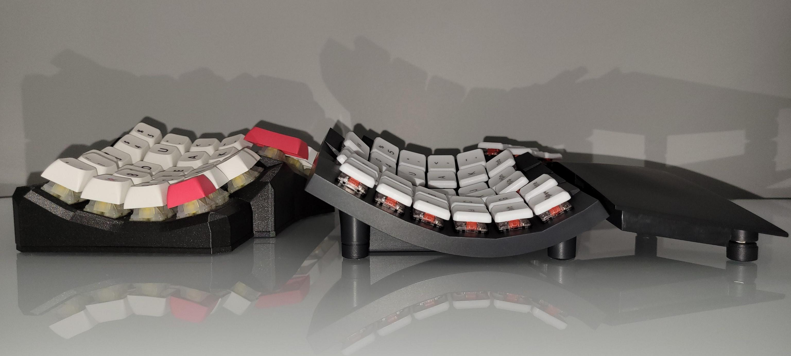
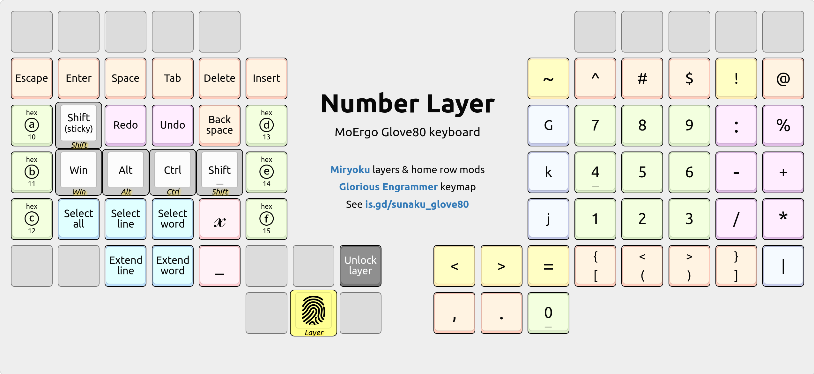

Is that… Batman’s keyboard?! ü¶á No, but it sure makes me feel like him:
sitting in the turquoise glow of the Batcomputer, deep within the quiet
solitude of the Batcave, saving the world with this ergonomic marvel!
This is my MoErgo Glove80 keyboard: a split, columnar, contoured, and wireless
ergonomic marvel that has become my “endgame” choice for the foreseeable future.
Previously, I used an Ergohaven Remnant
keyboard for 6 months, a Dactyl Manuform 5x6
keyboard for a year, an ErgoDox EZ keyboard for 6 years, and a Kinesis
Advantage keyboard for 11 years prior — all on the quest for better ergonomics.
Embodying a thoughtful, humanistic design that is forgiving (accommodating a broad range of hand sizes and shapes), inviting (like a lounge chair whose intuitive shape beckons weary hands to perch down for some well deserved rest), and futuristic (like some advanced Space Age technology that Batman would use), the Glove80 provides a comfortable, efficient, and delightful typing experience.
For me, the Glove80 is like a dream come true because it brings together the best features of all the keyboards I’ve used so far on my quest for ergonomics:
I especially revered the Kinesis Advantage for its unconventional yet ingenious design, but I often wished it were split so that I could separate the keywells at shoulder width apart for a more relaxed, natural stance. Thus I embarked on a split keyboard journey, sacrificing keywells in favor of a split design. üíî Fortunately, my original wish has now been granted: the Glove80 delivers it all!
Impression
My first impressions of this keyboard, after connecting it to my computer, were:
Everything feels very reachable, like fitting into a pair of gloves! In particular, the top-row pinky key (Q on QWERTY) is the best I’ve ever felt.
Excellent thumb cluster: the lower arc follows my thumb’s natural motion perfectly, and the nearest upper arc key is also reachable without effort.
The keycaps’ POM material is delightfully smooth and slippery, making it easy (and fun) to slide fingers across. It’s kind of like having wheels on ergonomic office chairs: you can move around your desk while you multitask.
Key travel is shorter than the Cherry MX switches I’m accustomed to, which is great because I can feel less effort is needed to fully press each key.
The positioning of the function keys (which are offset by one key above the number row) makes sense now: the missing F6 cut-out on the left half is out of reach unless I shift my palm off its comfortable perch on the palm rest.
The keyboard is very light, making it easy to lift and reposition to suit the task and posture (whether I’m sitting or standing at my desk) at hand.
Adaptation
On my first day using the Glove80, coming from an Ergohaven Remnant keyboard, I felt right at home: achieving 100 WPM on MonkeyType, as shown below. And this speed is withhome row mods, disambiguated by ZMK’s global-quick-tap feature! üöÄ
Key travel is definitely less pronounced on the Glove80’s special-order Choc v1 Red key switches, which allows for a more rapid inter-key typing speed, and the tighter key spacing afforded by Choc switches (compared to MX switches) along with the Glove80’s ergonomic curvature are helping to minimize finger travel around the keyboard. With more practice (just normal usage over time), I feel confident that I can increase my touch-typing speed even further on the Glove80.
Porting my QMK keymap from the Remnant over to ZMK on the Glove80 was challenging, mainly because my home row mods disambiguation logic is so complex. Notably, I worried whether I would be able to translate all the nuances of my QMK patch (which took over 6 months of occasional development to master) to ZMK, but thankfully it was significantly simpler than what I had imagined: without modifying ZMK source code or writing C extensions, I was able to port nearly all of that monstrous sophistication using declarative snippets of custom behaviors!
Comparison
In terms of quality, the Glove80 is strong yet light: hallmarks of high-end polycarbonate material, which is also used to make optical lenses in eyeglasses. This stands opposite to the Remnant’s light yet fragile 3D-printed construction, which requires careful handling since it can be damaged easily, say, if dropped.
In terms of height, the Glove80 achieves a lower height profile due to its center of gravity (its keywell nearly touches the desk!) in combination with low-profile Choc switches and keycaps. Even at its tallest point, the Glove80 still stands below the height of the Remnant’s top-inner corner key (number 5).

üëÜ Outer profile: looking from the left side toward the center.
üëÜ Inner profile: looking from the center toward the left side.
üëÜ Front profile: looking from the palm rest toward the back.
üëÜ Back profile: looking from the back toward the palm rest.
In terms of weight, the Glove80 feels much lighter than the Remnant even though it weighs negligibly more: using a kitchen scale, I observed that the right half of the Glove80 (with palm rest) weighed 9.7oz / 275g whereas the Remnant’s (without palm rest) weighed 9.6oz / 272g. However, the Glove80’s weight is more evenly distributed over its surface so it doesn’t feel as heavy when you lift it up; whereas the Remnant’s shape is more condensed, bulkier, and harder to grasp.
In terms of mobility, the Glove80’s two halves always communicate wirelessly whereas the left half can be wired, wireless, or both (since it supports connecting to 5 devices simultaneously: 4 Bluetooth devices and 1 USB device). This allows both halves, especially the right half, to be repositioned at will. For instance, I sometimes need more writing space on my desk to take notes or doodle, so I simply lift the right half up & away to make room for my notebook. And when I’m finished, I simply move the right half back into position: setting it down wherever I find is comfortable for me, approximately at shoulder width. This is in stark contrast to the Remnant, which is always and only wired to USB. As a result, I’m hesitant to reposition the Remnant’s two halves freely because that may disturb their perfect symmetry, which is tedious to restore accurately.
In terms of firmware, the Glove80’s online layout editor makes it easy to customize the keymap and share it with others: there is a free-form text box for notes alongside a “Custom Defined Behaviors” box for ZMK configuration snippets, which lets you implement advanced features such as home row mods disambiguation. And once you’ve built and downloaded your keymap from the online layout editor, flashing the resulting *.uf2 file is a simple drag & drop operation after entering bootloader mode, which has a robust hardware fail-safe of holding particular keys while powering on the keyboard, as documented in the user guide.
In terms of documentation, the Glove80 comes with a comprehensive user guide that covers everything from ergonomics to soldering; gentle introductory emails when your order is being prepared for shipment; and a helpful Discord community so thoughtful and engaging that I look forward to participating in it every day.
In terms of support, the Glove80’s inventors are active participants in the Discord community, and they’re reachable directly by email and other means too; their professional demeanor and responsiveness is often applauded by customers. This is significantly better than the Remnant’s support, where language and cultural differences sometimes complicate communication and problem resolution.
Overall, the Glove80 is a phenomenal upgrade over the Remnant and all other ergonomic keyboards I’ve used before. It’s like a dream come true: I love it! üëå
Layers
The keyboard boots up into the following default “base” layer when powered on.
When held, the purple keys in the thumb
clusters activate the subsequent layers according to the legendary Miryoku’s
6-layer design with 3-key thumb activation.
DOWNLOAD: This layer map is also available as a printable PDF document. INTERACTIVE: Hover your mouse over the purple keys to see each layer!
Going beyond Miryoku, I have added a custom layer locking feature whereby a
Miryoku layer can be set to remain active even after you release its thumb key:
while holding the Lower key, simply tap your desired Miryoku layer’s thumb
key. To unlock the layer, simply tap the Miryoku layer’s thumb activation key again.
Lower layer
This layer provides layer locking for all the other layers in the keymap:
To lock a layer: Hold the Lower key (one of the black star keys in the
diagram) and tap the thumb cluster key for the layer you want to lock into.
To unlock a layer: Tap any “Unlock layer” key on the layer you’ve locked.
Typing layer
This layer temporarily disables home row modifiers and thumb layers so that you
can focus on typing, without the risk of activating them unintentionally. It’s
meant for practicing your touch-typing skills and is helpful for newcomers.
Gaming layer
This layer repositions the WASD cluster to better fit the Glove80’s ergonomic
curvature while retaining the conventional placement of the pinky finger’s keys.
Consequently, the index finger’s home position is shifted down by one row (on D
key) instead of the home row (on E key), as marked in the diagram.
It also replicates the first column of the right half of the keyboard on the left
half because it’s common practice in games to place hotkeys on both central
columns as they assume close proximity on conventional row-staggered keyboards.
For example, notice how the home row ends with F and so the G wraps back around.
Similarly, it also adds important hotkeys such as M for map and I for inventory.
The left half of the keyboard has all number row keys above the home block for
quick access to groups, inventory, spells, and abilities in RPG & RTS games.
The right half of the keyboard clusters all function keys at the top, and puts
arrow keys on the thumb cluster with Escape and Enter for menu navigation.
Magic layer
This layer features a “macOS mode” that you can toggle on/off dynamically. When toggled on, the Ctrl and Cmd keys are swapped (changing GACS into CAGS) on the base layer’s home row mods as well as the left/right hand Miryoku layers.
Factory layer
If you’re a new user (perhaps you’ve just unboxed your Glove80 or you haven’t
customized its default keymap), you might find the Factory layer to be useful:
Press & hold the Magic key (bottom left corner key on left half of Glove80)
Tap the left hand’s T3 key (furthest key on the upper arc of thumb cluster)
This shortcut will toggle the Factory layer on/off and allow you to experiment
with this keymap while maintaining an easy escape route to the factory default.
Cursor layer
Mouse usage
Many keys from the right half are mirrored on the left half for more convenient
right-handed mouse usage. For example, you can select and drag with your right
hand on the mouse while cutting, copying, and pasting with your left hand on
the keyboard. Similarly, you can undo & redo and run the text selection macros too.
Arrow keys
The up/down arrow keys on the right-hand home row diverge from Vim’s HJKL order
to avoid double-duty on the index finger for HJ (left & down directions) so that
each home row finger is only responsible for a single direction; and also because
it feels more natural to follow the inward-rising curve of the keyboard’s
contoured keywell, which elevates the thumb above the pinky finger and,
similarly, the middle finger (up arrow) above the ring finger (down arrow).
This is a longstanding preference that I formed 17 years ago, in my early days of
using the Kinesis Advantage with the Dvorak layout, whose lack of HJKL provided
the freedom to reimagine the arrangement of arrow keys on the home row.
Select & edit
Editing (index finger) and selection (thumb cluster) keys line the inner wall.
This opposition allows for pinching, where selections can be followed by edits.
For example, to copy everything, I would first tap the “Select all” key with my
thumb and then pinch slightly inward to tap the “Copy” key with my index finger.
The copy and paste keys are stacked vertically, in that order, to allow the index
finger to rake down upon them in a natural curling motion toward the palm. This
order is also logical, since pasting requires something to be copied first.
The select & extend word/line keys on the thumb cluster are ZMK macros that approximate
Pascal Getreuer’s word selection QMK macro, which automates common
selection tasks that require holding down Control and Shift with the arrow keys:
These keys can be combined with the Shift modifier to reverse their direction.
In some apps, the select word key cycles to the next successive word each time!
Number layer

A 3x3 numeric keypad (using the standard 10-key layout) occupies the home block.
The period and comma keys are positioned near the zero key on the thumb cluster.
Date & time
The slash and minus keys are positioned for MM/DD and YYYY-MM-DD date entry.
Similarly, the colon key is positioned above them for HH:MM:SS time stamp entry.
: time stamp separator
- ISO-8601 date separator
/ American date separator
Arithmetic
Common arithmetic operators pair along the sides of the 3x3 numeric keypad.
% and : for percentages and proportions
+ and - for addition and subtraction
* and / for multiplication and division
Prefix signs
Signs that commonly prefix numbers line the top of the 3x3 numeric keypad.
~ approximately
# literal number
$ dollar amount
@ at the rate of
Inequalities
Comparison operators are positioned along the perimeter of the home block.
< less than
> greater than
= equal to
~ approximately
Vim navigation
Vim navigation operators (prefixed by a number N) fill the leftmost column:
k goes up N lines
j goes down N lines
G goes to line number N
| goes to column number N
Function layer
The function keys are arranged in the same 10-key layout as the Number
layer’s 3x3 numeric keypad so that you can develop common muscle
memory for both layers. The remaining F10-F12 keys wrap around the home block
because they’re found in shortcuts such as BIOS save/quit, fullscreen toggle,
and devtools, respectively.
Symbol layer
Video: Tour of my Symbol layer, with examples in Vim.
This is the crown jewel of my keyboard’s configuration: an entire layer dedicated
to the entry of symbols that are essential for computer programming. It’s the
result of several hundreds of layout iterations over the last 10 years.
üëâ
Red quotes.
Green arrows.
Blue groups.
Purple flips.
Yellow Vim.
\ is on the thumb for escaping all other symbols without moving your hand.
For snake_case, _ is at the same spot as English’s most frequent letter e.
For assignment, = is on the home row because it’s frequent in programming.
For strings, quotation marks are on both hands for task-based convenience.
For function calls, ();, is above the home block, inward-rolling rightward.
Bitwise |& and arithmetic -+ operators “flap down” and “fold up” together.
Overall, the guiding principle for this layer’s design is to favor inward rolls.
Next, I also consider the ergonomics (i.e. what feels comfortable) of the
keyboard. For example, inward rolls starting with the pinky finger are easier to
perform from the home and upper rows when compared to the lower and bottom rows.
This is why I’ve placed ! on the upper row instead of the lower row, where ~
is.
Finally, I also consider clustering, balance, and base layer affinity. For
example, ! on the upper pinky rolls into () for grouped negation !() and
also into ? for interrobang !?. Similarly, () rolls into ? for optional
group capture ()? in regular expressions. In this way, I feel that !, (),
and ? are balanced.
Spacegrams
Video: Tour of my Spacegram operators, at timestamp 10:14.
So I came up with the following revised design for the Symbol layer that puts spacebar (as well as backspace and enter) on the right hand. ü•º‚ú® This way, we don’t need to exit the Symbol layer to type spaces, newlines, or even to correct mistakes! ü§Ø It has eliminated the delicately timed dance around the spacebar for me when programming now. üòéüëå
Demonstration of typing Rust code using Spacegram operators.
Base layer affinity
\ is on the same key as Escape on the base layer: they both escape things.
~ is on the same key as Shift on the base layer: they both invert things.
(); sits just above the inward-rolling “you” sequence in the Engram layout.
Vim editor shortcuts
^ and $ are on the home row, for jumping to the start/end of current line.
# and * are on the home row, to search behind/ahead for word under cursor.
= is on the home row, to automatically indent current line or selection.
, and ; are above the home block, for navigating between f/F/t/T jumps.
( and ) are above the home block, for jumping to previous/next sentence.
{ and } are on the home block, for jumping to previous/next paragraph.
< and > are on the home block, for decreasing/increasing indentation.
[ and ] are below the home block, for addressing previous/next things.
? and / are stacked vertically, to search behind/ahead for regex pattern.
% is on the thumb’s home key, for jumping to cursor’s matching delimiter.
: is on the middle thumb key, for entering Vim’s command mode comfortably.
:% is an inward swipe by the thumb, for a command across the whole buffer.
@: is an inward swipe by the thumb, to repeat the most recent command line.
Pinching bigrams
?. for the optional chaining operator in JavaScript.
*. for regular expressions.
/. for directory matching in filesystem globs.
Vertical bigrams
#! for shebang lines in UNIX scripts.
!~ for regular expression “not matching” in Perl, Ruby, and Elixir.
/* and */ for multi-line comments in C, CSS, and JavaScript.
Adjacent bigrams
#! for shebang lines in UNIX scripts.
-> for thin arrows in C, C++, and Elixir.
() for parentheses.
.* for filesystem globs.
*. for regular expressions.
/* and */ for multi-line comments in C, CSS, and JavaScript.
\. for literal period in regular expressions.
:% is an inward swipe by the thumb for a Vim buffer-wide command.
Inward rolling bigrams
() for parentheses.
<> for angle brackets.
[] for square brackets.
{} for curly braces.
(); for zero-arity function calls in C and related languages.
); for function call statements in C and related languages.
(" for starting a string value argument for a function call.
[" for starting a string value for a list or hashtable lookup.
=" for HTML attributes and Bourne shell variable assignments.
.* for regular expressions.
~/ for home directory paths in UNIX.
<- for assignment in R and in Elixir’s with statements.
-> for thin arrows in C, C++, and Elixir.
=> for fat arrows in Perl, Ruby, and Elixir.
!= for “not equal to” value comparison in many languages.
<= for “less than or equal to” comparison in many languages.
^= for bitwise XOR assignment in C and related languages.
|> for the pipe operator in Elixir.
!( for negating a group in Boolean expressions.
"$ for quoted variable substitution in Bourne shell.
!$ for last argument of previous command in Bourne shell.
$? for exit status of previous command in Bourne shell.
<% for directive tags in Ruby’s ERB and Elixir’s EEx templates.
<? for directive tags in PHP templates.
#{ for string interpolation in Ruby and Elixir.
`' for legacy curly quotes.
</ for element closing tags in XML and HTML.
~> for pessimistic version constraint in SemVer.
\. for literal period in regular expressions.
~/ for home directory paths in UNIX.
!? for interrobang in English prose.
Outward rolling bigrams
=~ for regular expression matching in Perl, Ruby, and Elixir.
-= for negative accumulation in C and related languages.
+= for accumulation in C and many languages.
%= for modulo assignment in C and related languages.
>= for “greater than or equal to” value comparison.
>& and &< for file descriptor redirection in Bourne shell.
$_ for value of last argument of previous command in Bourne shell.
$< for the first source of a rule in Makefile.
$^ for all sources of a rule in Makefile.
$@ for the target of a rule in Makefile.
%> for directive tags in Ruby’s ERB and Elixir’s EEx templates.
?> for directive tags in PHP templates.
${ for variable interpolation in Bourne shell.
%{ for maps (hash tables) in Elixir.
?! for interrobang in English prose.
Mouse layer
Movement keys are located centrally in the home block, surrounded by scroll wheel
operations, so that you can scroll while simultaneously moving the mouse.
System layer
Keys for controlling RGB illumination line the central rows of home block.
Keys for system power control and traditional locking make up the thumb cluster.
Emoji layer
Consistent with the cardinal directions of the arrow keys on the cursor layer,
these Emojis are organized into logical groups of 4 (or more) within each row.
Customizable preset selections for skin tone, hair style, and gender sign are
arranged on the home row so you can inward-roll them together in one swoop. See
the #define EMOJI_*_PRESET settings in the ZMK snippet for more information.
Here are some examples (as illustrated interactively in the diagram above):
Using skin tone: üíÅ+üèø=üíÅüèø
Using gender sign: üíÅ+ZWJ+‚ôÄÔ∏è=üíÅ‚Äç‚ôÄÔ∏è
Using both of the above: üíÅ+üèø+ZWJ+‚ôÄÔ∏è=üíÅüèø‚Äç‚ôÄÔ∏è
This file in the source repository for this
keymap’s firmware defines the above. You can customize this file to suit your
needs, as it’s already Unicode enabled. See the “World and Emoji characters” section for more information and examples.
World layer
This layer overlays Latin characters atop related letters in the vowel cluster.
Modifiers along the right hand’s home row act as sub-layers, working together to
target the desired accented character from each of the overloaded vowel letters.
—
legend
—
LALT
RSFT
RALT
LCTL
base
RCTL
For example, tapping Y produces different characters depending on the modifiers:
Letter
Modifier
Shift?
Output
Y
❌
❌
ý
Y
❌
✅
Ý
Y
LCTL
❌
ÿ
Y
LCTL
✅
Ÿ
world.yaml
This file in the source repository for this
keymap’s firmware defines the above. You can customize this file to suit your
needs, as it’s already Unicode enabled. See the “World and Emoji characters” section for more information and examples.
Activate the typing layer, launch the QMK Configurator’s
testing tool, and then pretend to use home
row mods. Note the timing & duration of keystrokes reported by the tool
and use them to adjust the #define timing thresholds in my ZMK
port.


Demonstration of typing Rust code using Spacegram operators.